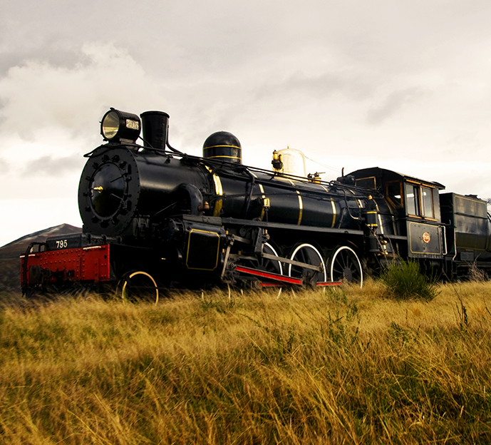
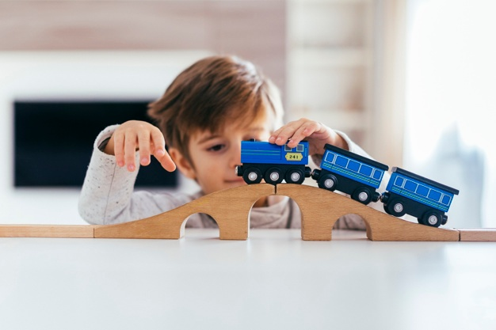
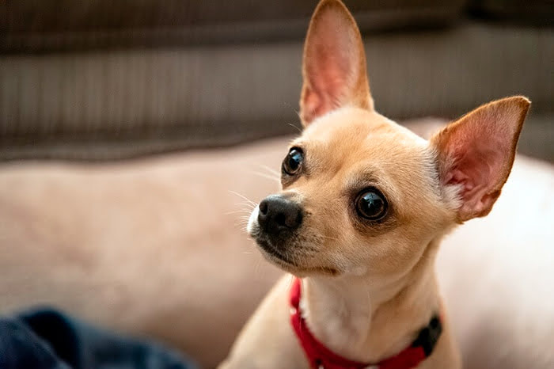

Mi nombre es Rene Alejandro Yuman Barco, Naci y vivo actualmente en Guatemala, el 10 de Junio de 2005, cuando tenia 3 años, llegó mi hermana mejor, que actualmente tiene 13 años, se llama Alison Yadira, entre a kinder, pero me pasaron hasta 1ro primaria por saber demasiado, asi pasaron los años, jugando y estudiando, desde pequeño me encantaron los trenes.
 Luego fui creciendo, viendo pasar el tiempo, admirando la belleza del mundo, hasta que un dia, una ex-maestra me regalo un perrito, lo nombre PINKY, disfrute con el, la pase bien, el tenia permiso para salir a la calle, la pasaba feliz, un dia, el salio, pero lo atropellaron, me sorprendió de que el perrito saliera sano y salvo, pudo resistir, y asi paso por mucho tiempo, luego, cuando tenia de 14-15 años, nació mi hermanito, se llama Carlos Alexander, pero despues, lastimosamente, mi perrito PINKY falleció, mi familia se puso muy triste, es un evento doloroso y muy triste, pero agradezco el hecho de que estuvo conmigo y que paso una vida feliz.
Actualmente tengo una perrita, se llama Missy, es una perrita muy bonita, color café, pero es muy inquieta y muy traviesa.
